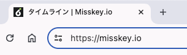
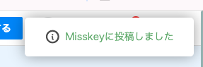
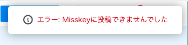

使い方と設定方法
Misskeyに投稿する前に、投稿先のドメイン名とアクセストークンを設定する必要があります。
サーバー名とアクセストークンの見つけ方
はじめに、普段使っているMisskeyサーバーにアクセスしてください(TLが見れる画面)
ここで、アドレスの部分をクリックすると、今アクセスしているURLが見れます(Chromeの場合は２回クリックするとURLを全文表示してくれます)
ここで、https:// の後に続く文字がサーバー名になります。これがサーバー名になります。
次にアクセストークンを取得します。
Misskeyの設定に移動し、「API」という項目を探してクリックし、その中の「アクセストークンの発行」ボタンを押してください。
設定が開いたら、「ノートを作成、削除する」という項目にチェックを入れてOKしてください。
そうすると良くわからない数字と英語が出てくるので、それをコピーします。これがアクセストークンです。
(アクセストークンは１回しか表示されません。コピーしないで間違えてOKを押した場合は、もう一個作り直してください。)
アクセストークンを他人に知られるとあなたのアカウントを悪用される可能性があります。自分以外には教えないでください
ツイキャスでの初期設定
ツイキャスにアクセスして、「ブラウザ配信」もしくは「ツール配信」を開始します。この状態でコメント欄に「Misskey設定」が出てくるので、それをクリックして設定を開きます。
そしたら、先ほど調べたサーバー名とアクセストークンを入力し、保存ボタンを押します。これで設定が完了します
コメントをMisskeyに投稿するときは...
投稿したい時は、コメント入力欄下の「Misskeyにも投稿」にチェックを入れて、ツイキャスのコメント投稿ボタンをクリックしてください。
正しく投稿されると、右上に通知が出現します。
サーバー名やトークンの設定が間違っていたり、エラーで正常に投稿できなかった時は次のような表示が出ます
